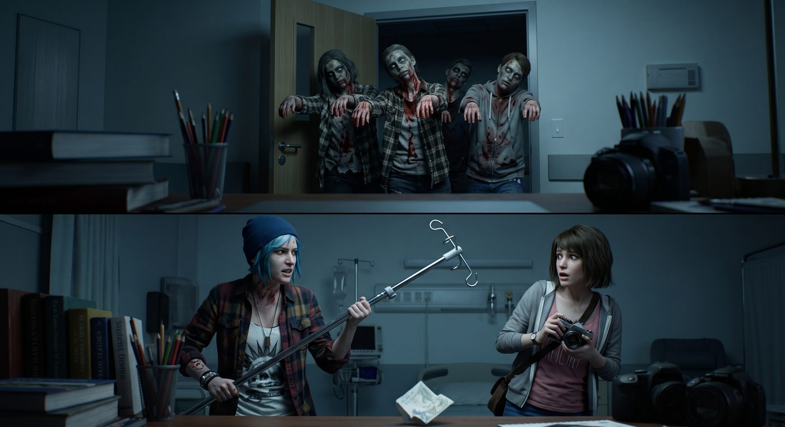

探病(續):不速之客

Leon 剛說完那句「打電話跟我老爸炫耀」,病房裡的笑聲還沒完全散去,門口忽然傳來一陣拖沓、含糊不清的呻吟聲。
「嗷……啊嗚……」
三個踉踉蹌蹌、渾身塗滿假血和灰色油彩的身影,搖搖晃晃地出現在病房門口,手臂僵直地往前伸,腳步刻意拖得又慢又詭異,活脫脫是從喪屍片片場逃出來的。
病房裡瞬間安靜了半秒。
「臥槽!」Chloe 反應最快,一把抄起床邊的輸液架,擺出防禦架勢,「Max,退後!」
Max 也嚇得後退一步,下意識抓緊了相機——雖然此刻完全沒有拍照的心思。
Leon 掙扎著想從床上坐起來,手忙腳亂地摸向床頭的呼叫鈴。
門口那三隻「喪屍」還在搖搖晃晃地往前逼近,其中一隻甚至煞有介事地伸手作勢要撲——
「等等等等!住手!」
那隻衝在最前面的喪屍猛地扯下頭套,滿頭大汗、一臉驚慌地舉起雙手投降——是 Warren。
「……Warren?」Chloe 舉著輸液架的手僵在半空。
剩下兩隻喪屍見狀,也趕緊摘下頭套——是 Brooke 和 Kenji,三人臉上還帶著沒卸乾淨的灰色油彩,顯得格外滑稽。
「你們幾個,」Chloe 把輸液架重重放回原位,又好氣又好笑,「不是說要交報告嗎?怎麼扮成這副德性跑來嚇人?」
「我們……」Brooke 尷尬地扯下最後一點假血道具,「路過附近一家道具店在清倉特價,順路買了套喪屍裝備,想說來探病順便給 Leon 警官整點驚喜氣氛,配合他喜歡的那個系列——結果沒想到會這麼嚇人。」
「而且我們剛從外面那場示威擠過來,」Warren 一邊撕扯臉上黏著的乳膠傷疤,一邊抱怨,「有夠誇張,人群裡有人拿著大聲公,對著警局方向死命喊『Defund Fascist Pigs』,喊了快十分鐘沒停過,我耳膜到現在還在嗡嗡響。」
Chloe 聽到這句話,眉頭一皺,火氣又冒上來:「這什麼跟什麼,亂喊一通,也不怕自己晚點真出事沒人管。」
倒是病床上的 Leon,神情意外地平靜,甚至帶著點見怪不怪的無奈笑意。
「習慣了,」他擺擺手,「這種場面我們見多了,喊喊口號發洩一下,大部分人也沒真的想幹嘛。」他頓了頓,語氣忽然沉了下來,「倒是……我看了後續的新聞報導。」
病房裡的氣氛瞬間收斂了幾分。
「鄰近幾個郡的類似案件,」Leon 的聲音低了些,「我這幾天躺在床上沒事,一直在想這件事。手法太乾淨了,我當時交手那一下,那個人的反應速度和格鬥意識,絕對不是臨時起意的業餘貨色。我有點擔心,他不會就這樣收手。」
Kenji 抹了把臉上還沒卸乾淨的灰色油彩,沉默了幾秒,終於開口。
「我這邊……其實查到了一點線索,」他的語氣少見地帶著一絲猶豫,「那套控制系統的底層程式碼,寫法很特殊,我懷疑跟我之前追蹤過的一個匿名帳號有關聯。但目前只是猜測,證據不夠,追蹤到一半線索就斷了,沒辦法確定身份。」
Leon 挑眉看向他,神情認真了幾分:「你手上有東西?」
「一些代碼片段,」Kenji 點頭,「還不足以構成什麼,我還在整理。」
「小心點,」Leon 的語氣忽然嚴肅起來,帶著一種劫後餘生的人才會有的鄭重,「這種對手,你們私下亂查很危險。真查到什麼,第一時間拿去找警方,別自己貿然行動——尤其是妳,」他看向 Kenji,「聽起來妳已經摸到他有反應的雷區了,這種人發現自己被盯上,狗急跳牆的時候什麼都做得出來。」
Kenji 沉默地點了點頭,沒有反駁。
Chloe 看著這一幕,原本因為喪屍惡作劇而放鬆下來的氣氛,又重新繃緊了幾分。她伸手,不動聲色地碰了碰身邊 Max 的手背。
窗外,示威隊伍的喇叭聲隱約還在持續,病房裡卻陷入一陣誰都沒有立刻開口的沉默,劫後餘生的輕鬆和尚未散去的陰影,詭異地交疊在同一個下午。